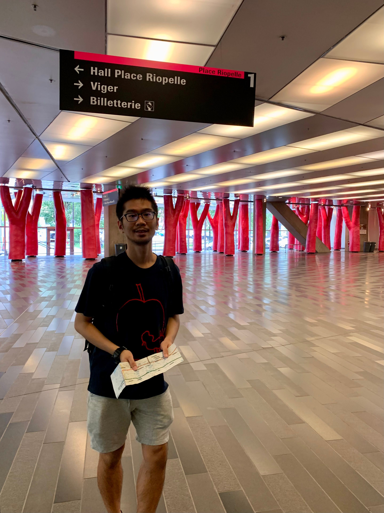

I am a CRM-Simons postdoctoral fellow based at Université du Québec à Montréal.
My research lies in the intersection of low-dimensional topology and dynamics.
My interests include flows and foliations on 3-manifolds, homeomorphisms of surfaces, and related topics.
You can find a list of my preprints and publications here.
I received my PhD at UC Berkeley under the supervision of Ian Agol.
In Spring 2026, I will be a McDuff endowed postdoctoral fellow at SLMath.
I am currently on the job market for a position starting in Fall 2026!
You can find my CV here (last updated: 19 Sep 2025).
Office: PK-5220
Email: chicheuk [at] hotmail.com